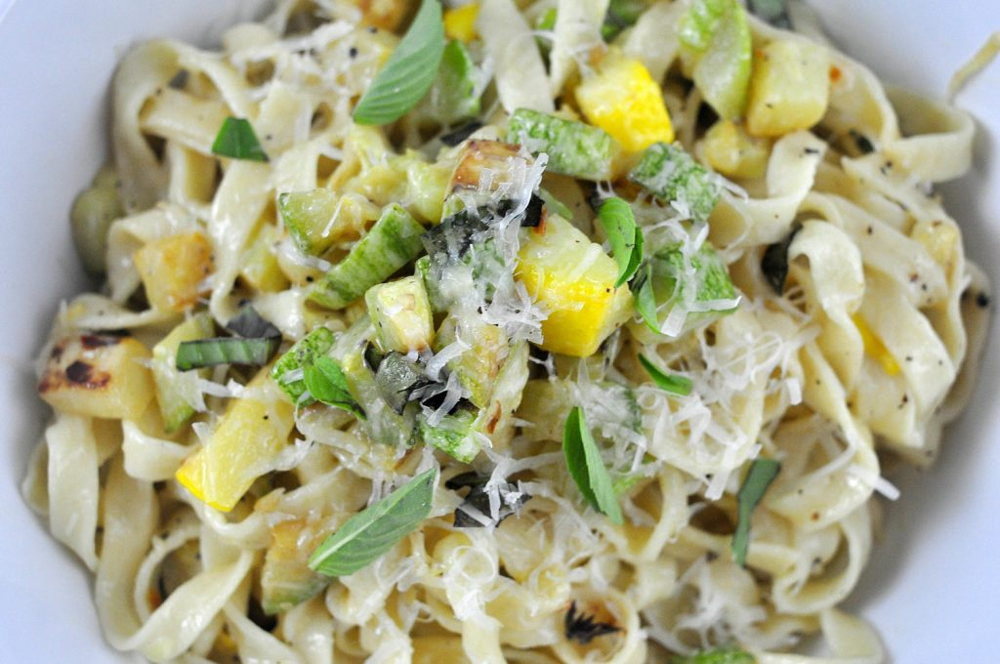

Creamy Zucchini Fettucine
From "Good and Cheap: Eat Well on $4/Day," by Leanne Brown

Description
I know, I know. I know what you're thinking. Another pasta recipe?! I promise, I tried to think of something more creative, but in the end, I just couldn't stay away. What can I say? I told you I love pasta!
Unlike the Egg Sauce Linguine recipe, however, this fettucine is light, vegetable-heavy, and perfect for warm weather. While the Egg Sauce Linguine is probably our go-to winter pasta, this one is our go-to for summer. Like with the other recipe, my wife and I will often substitute spaghetti for the fettucine. Also, although the basil is listed as optional in the ingredients below, I cannot recommend it enough; it transforms the whole dish.
Let the pasta-making commence!
Fun fact: I don't think I actually have a fun fact for this one, sadly. I guess the fact that I've never made it myself? I should probably do that at some point. Beloved wife, if you're reading this, I apologize for slacking.
Serves 2-3.
Ingredients
- Salt to taste
- 8 oz fettucine
- 4 tbsp butter
- 4 cloves garlic, finely chopped
- 1/2 tsp chile flakes
- 2 small zucchini, finely diced
- Zest of 1 lemon
- 1/4 cup heavy cream
- 1/2 cup grated Romano or Parmesan cheese
- Black pepper, to taste
- Sprinkling of finely chopped fresh basil (optional)
Steps
- Bring a pot of water to a boil over high heat. Salt liberally to taste.
- Cook the pasta according to the package directions. Drain the pasta just before it's finished (it will cook a tad further when later added to the vegetable pan).
- Meanwhile, melt 1 tbsp butter in a pan over medium heat. Add the garlic and chile flakes. Let them sizzle for 30 seconds to a minute, then add the zucchini. Stir the vegetables to coat. Cook, stirring occasionally, until some of the water has cooked off and the veggies are tender, 5-7 minutes (young summer zucchini doesn't need much cooking). Add the lemon zest. Stir.
- Drain the fettucine and add to the pan along with the remaining 3 tbsp butter, the cream, and most of the cheese. Toss the fettucine around the pan, and add salt and lots of freshly ground black pepper to taste. Top with a bit more cheese and a sprinkling of basil. Serve immediately.